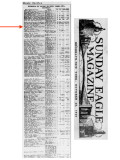
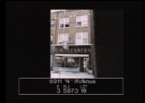
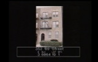
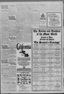
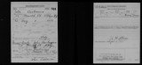

Ignazia Carbonaro
3 August 1889 – December 1980
Quick Facts
Immediate Family
Parents
- Pasquale Carbonaro (15 February 1855 – unknown)
- Rosalia Mule
Spouses
- Salvatore Ciancimino (30 April 1881 – 18 April 1948)
Children
- Josephine Cincimino (3 February 1912 – unknown)
- Rosalie Cincimino (29 September 1919 – 2015)
- Pasquale Cincimino (25 March 1922 – 1993)
- Frances Cincimino (1910–unknown)
- Frances Cincimino (1910–unknown)
- Frances Ciancimino (1910–1973)
Siblings
- Angelo Carbonaro (1 June 1887)
- Vincenzo Carbonaro (born 28 January 1892)
Family Relationship Notes
Ignazia Carbonaro was born 3 August 1889 at 9 a.m. in the house in via Acqua dei Cossari, Brancaccio, Palermo, to Pasquale Carbonaro, 34, miller, and Mulè Rosalia, 23. Her birth act (Palermo, Act No. 310) was read from the image and re-read letter by letter; the margin and body both name the child Ignazia, not Grazia. The NUMIDENT’s 29 July 1889 is superseded by the act, and the Ancestry profile’s 29 July 1889 is the same secondary date.
Her parents married 27 February 1886 in Brancaccio, Palermo. Her father’s parents were Angelo Carbonaro and Ignazia Fanara, and her mother’s parents were Vincenzo Mule and Anna Pisciotto, all four named on the marriage act and all four with Gen 8 profiles. Her brother Angelo, born 1 June 1887, is confirmed by the same parent pair on his WWI draft card and the 1930 census, and by the Palermo birth index.
On Family Tree Sites
Ancestry public Ignazia profile — Compiled profile; underlying records paywalled
Find a Grave search — No exact 1881–1948 match
Pasquale CarbonaroGeneration VII parent profileRosalia MuleGeneration VII parent profileAncestry public Angelo Carbonaro search resultOne result gives Angelo born 1 June 1887 in Palermo, died July 1978 in Brooklyn, and parents Pasquale Carbonaro and Rosalie Moule; compiled same-name search result.Couple Folder
Life Timeline
3 August 1889 · Birth · age 0
Born 3 August 1889 at 9 a.m. in the house in via Acqua dei Cossari, Brancaccio, Palermo, to Pasquale Carbonaro, 34, miller, and Mulè Rosalia, 23 (Palermo Birth Records, Act No. 310). The NUMIDENT gives 29 July 1889; the birth act is authoritative.
1910–1922 · Children · about ages 20–33
Her husband’s 1933 Declaration of Intention names their four children, all born in New York City: Frances, 18 February 1910; Josephine, 3 February 1912; Rosalie, 29 September 1919; and Pasquale, 25 March 1922. The three overlapping Frances entries on the Ancestry profile are preserved as separate unresolved identities rather than merged.
18 April 1948 · Salvatore’s death · about age 58–59
Her husband Salvatore Ciancimino (30 April 1881 – 18 April 1948) died in Brooklyn. His 1933 Declaration of Intention says they married 11 November 1906 in New York; the marriage record gives 15 September 1906.
December 1980 · Death · age 91
The public Ancestry profile reports her death in Brooklyn, New York. The exact day and burial place remain unknown.
Life Story
Ignazia Carbonaro was born 3 August 1889 in Brancaccio, Palermo, to Pasquale Carbonaro and Rosalia Mule, and died in December 1980 in Brooklyn. The public Ancestry profile had reported her birth as 29 July 1889 and her mother as Rosalie Moule; her birth act (Palermo, Act No. 310) corrects both. She married Salvatore Ciancimino (30 April 1881 – 18 April 1948). His 1933 Declaration of Intention names their four children, all born in New York City: Frances, 18 February 1910; Josephine, 3 February 1912; Rosalie, 29 September 1919; and Pasquale, 25 March 1922. The Ancestry profile displays six child entries, including three Frances entries with overlapping names and dates; the three Frances entries are preserved as separate unresolved identities.
Photo Gallery






Sources and Evidence
- Declaration of Intention, U.S. District Court, Eastern District of New York, 5 April 1933, image 44 of 187. Salvatore Cincimino states he was born in Corleone, Sicily, on 30 April 1881; entered New York 21 June 1904 on the vessel North America, from Palermo; was married in New York on 11 November 1906; his wife Ignazia was born in Palermo on 29 July 1889 and entered the United States 8 September 1903; their children, all born in New York City: Frances 18 February 1910, Josephine 3 February 1912, Rosalie 29 September 1919, Pasquale 25 March 1922. The declaration was read from the image and re-read letter by letter in a second pass. Index: New York, U.S. District Court Naturalization Records.
- New York, New York City Marriage Records, 1829–1938 — Salvatore Cincimino and Ignazia Carbonaro. Married 15 September 1906, Manhattan, certificate 23815. The index names his parents as Pasquale Cincimino and Francesca Perone. The marriage date conflicts with the 11 November 1906 date on his 1933 Declaration of Intention.
- Ancestry public Ignazia Carbonaro profile — Reports birth, death, parents, spouse and six child entries; underlying sources are not exposed.
- Ancestry public Salvatore Ciancimino results — The 1879 Sciacca/1948 Brooklyn result lists Salvadore Ciancimino and Antonina Marotta as parents; distinguish from same-name men. Refuted by his 1933 Declaration of Intention, read from the image: he was born 30 April 1881 in Corleone to Pasquale Cincimino and Francesca Perone.
- SortedByName Carbonaro index (derivative SS-5 transcription) — Angelo Carbonaro b. 1 Jun 1887 is transcribed with parents Pasquale Carbonaro and Rosalia Mule; sibling candidate only, original SS-5 not reviewed.
- FamilySearch 1950 census index search — Frances Cianeimino, born 1911 in New York City; no parents listed. Superseded by his 1933 Declaration of Intention, which names their four children with dates.
- Ancestry public Angelo Carbonaro search results — One listed Angelo matches birth 1 June 1887 in Palermo, death July 1978 in Brooklyn, and parents Pasquale Carbonaro and Rosalie Moule. Same-name search/compiled result; underlying original sources are not shown.
- SortedByName Carbonaro entries transcribed from SSA records (Angelo SS-5, Dec. 1936; Ignazia SS-5/NUMIDENT) — Angelo is transcribed as born 1 June 1887 in “BLERMO, Italy,” parents Pasquale Carbonaro and Rosalia Mule. Ignazia is transcribed as born 4 August 1889 / 29 July 1889 in “PALERNO, Italy,” parents Pasquale Carbonaro and Rosalie Moule. Derivative transcription; original SS-5/NUMIDENT not inspected.
- Palermo, Birth Records January–October 1889, Act No. 310. Carbonaro Ignazia, born 3 August 1889 at 9 a.m. in the house in via Acqua dei Cossari, Brancaccio, to Carbonaro Pasquale, 34, miller, domiciled in Brancaccio, and Mulè Rosalia, 23, his wife, living with him. Declared 5 August 1889 before Salvatore Cappello. The act was read from the image and re-read letter by letter in a second pass; the margin and body both name the child Ignazia, not Grazia.
- Palermo, Marriage Records 1886, Act No. 15. Pasquale Carbonaro, 31, miller, born Palermo, son of Angelo Carbonaro and Fanara Ignazia, married Mulè Rosalia, 23, born Zisa, daughter of Vincenzo Mule and Pisciotto Anna, 27 February 1886, Casa comunale di Brancaccio, before Michele Patricolo. Both spouses signed. The act was read from the image and re-read letter by letter in a second pass.
- United States Social Security NUMIDENT, Ignazia Cincimino. Alias Ignazia Carbonaro, born 29 July 1889, “Palerno, Italy,” Social Security application 17 July 1972, died December 1980; parents Pasquale Carbonaro and Rosalie Moule. A database transcription; the paper SS-5 original is not on FamilySearch. Her birth act gives 3 August 1889 and is authoritative.
Research Notes and Open Questions
- 28 November 2026: her birth act was read from the image and re-read letter by letter (Palermo Birth Records, Act No. 310). She was born 3 August 1889 at 9 a.m. in the house in via Acqua dei Cossari, Brancaccio, Palermo, to Pasquale Carbonaro, 34, miller, and Mulè Rosalia, 23. The NUMIDENT’s 29 July 1889 is superseded by the act, and the birth index’s “Grazia” is an indexing error — the act names her Ignazia in the margin and the body.
- Her parents’ marriage act (27 February 1886, Brancaccio, Act No. 15) names her grandparents: Angelo Carbonaro and Ignazia Fanara on her father’s side, Vincenzo Mule and Anna Pisciotto on her mother’s side. All four have Gen 8 profiles.
- Her brother Angelo (born 1 June 1887) is confirmed by the same parent pair on his WWI draft card and the 1930 census, and by the Palermo birth index. Her brother Vincenzo was born 28 January 1892 in Brancaccio (birth index, v. 300, n. 43); his birth act has not been read.
- Ancestry’s six child entries are Pasquale Cincimino (1922–1993), Rosolia Cincimino (1919–2015), Josephine Ciancimino (1913–unknown), two separate Frances Cincimino entries (1910–unknown), and Frances Ciancimino (1910–1973). Preserve the duplicate/conflicting Frances entries as separate people until records resolve them.
- FamilySearch 1950 index “Frances Cianeimino” is a name/year/place lead only, not proof of parents or identity as Gerald’s wife.
- The “similar people” list on Ancestry is not a sibling list; those names have not been linked.
- No verified individual portrait or grave marker was obtained for Ignazia beyond the six uncaptioned Ancestry thumbnails preserved in her gallery as unidentified media previews.
- Angelo’s birth act (Brancaccio, v. 239, n. 218) has not yet been read; the birth index writes the 1887 child as “Angela.” Her marriage to Salvatore Cincimino is recorded in the 1906 New York marriage index (15 September 1906, Manhattan); his 1933 Declaration of Intention gives 11 November 1906 — the two dates conflict.
- 28 November 2026: her husband Salvatore Cincimino’s 1933 Declaration of Intention was read from the image and re-read letter by letter. It establishes his birth in Corleone on 30 April 1881 to Pasquale Cincimino and Francesca Perone, his arrival in New York 21 June 1904 on the vessel North America, and their four children, all born in New York City: Frances (18 February 1910), Josephine (3 February 1912), Rosalie (29 September 1919), and Pasquale (25 March 1922). The compiled-tree Sciacca birth and Salvadore × Antonina parentage are refuted. Her own birth on 29 July 1889 per the declaration matches the NUMIDENT; her birth act gives 3 August 1889 and is authoritative.
DNA
No DNA matches linked.
Family Notes
No family-notes link is listed on this profile.
Created 16 November 2026 as an unproved research lead. Updated 28 November 2026: her birth act (Palermo, Act No. 310) establishes her birth as 3 August 1889 and her parents as Pasquale Carbonaro and Rosalia Mule. Her husband Salvatore Ciancimino’s 1933 Declaration of Intention establishes his birth in Corleone on 30 April 1881 to Pasquale Cincimino and Francesca Perone; the compiled-tree Sciacca birth and Salvadore × Antonina parentage are refuted.